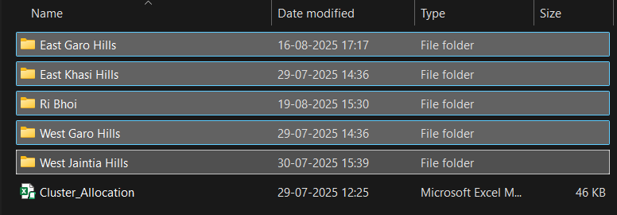
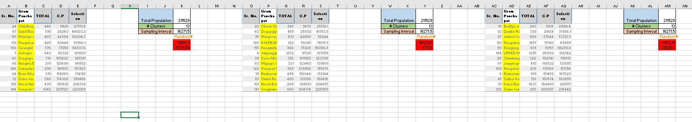

Cluster selection in Rural areas
This section discusses the implementation of the app for cluster selection in rural areas.
File structure
Cluster Allocation.xlsm is present in all the state folders, and PPS.xlsm is present in all the district folders under each state. Block 1 data.xls contains the list of Gram Panchayats as shown in below.
Functions

Overview
The ALLinALL macro implements a sophisticated three-phase data processing and sampling system designed for multi-directory statistical analysis. The system processes Excel files across multiple folders, consolidates data, calculates proportional distributions, and performs systematic sampling with multiple iterations.
PHASE 1: Data Collection and Consolidation
(First Pass)
Purpose
This phase discovers and processes data files across directory structures, creating a unified dataset for sampling procedure.
Detailed Procedures
1.1 Directory Scanning and Setup
currentDirectory = ThisWorkbook.Path
dirName = Mid(currentDirectory, InStrRev(currentDirectory, "\") + 1)Function: Identifies the current working directory and extracts just the directory name
Output: Creates a base reference for grouping data by location
Data Flow: Directory name goes to Column A of the main worksheet
1.2 Folder Iteration and File Discovery
For Each folder In fileSystem.GetFolder(currentDirectory).SubFolders
PPSPath = folder.Path & "\" & PPSFile- Function: Systematically searches each subfolder for PPS.xlsm files
- Logic: Uses FileSystemObject for robust file system navigation
- Error Handling: Checks file existence with
Dir(PPSPath) <> "" - Data Flow: Folder names populate Column B of main worksheet
::: {align=“center”}  :::
:::
1.3 TableCooker Execution (Core Data Processing)
When a PPS.xlsm file is found, the system executes the `TableCooker` macro:
Sub-Process: CopySheetsFromAllWorkbooks
fileName = Dir(folderPath & "*.xls")
Do While fileName <> ""
For Each ws In sourceWorkbook.Sheets
ws.Copy After:=currentWorkbook.Sheets(currentWorkbook.Sheets.Count)Function: Discovers and imports all Excel files (.xls) within each folder
Logic: Creates a comprehensive dataset by merging multiple source files
Sr. No. Gram Panchayat TOTAL C.P Selection 1 BIRSIEJ 750 2 I.C.A.R. 836 3 INGSAW 1184 4 ITPATUNG 131 5 ITSOHPAIR 710 Exclusion Rule: Skips the current workbook to avoid circular references
Sub-Process: Data Standardization
ws.Rows("1:6").Delete ' Remove headers
ws.Rows(lastRow - 1 & ":" & lastRow).Delete ' Remove footers- Function: Standardizes data structure across different source files
- Rationale: Removes inconsistent header/footer rows that vary between files
- Result: Clean, uniform data ready for statistical processing
Sub-Process: Data Consolidation
usedRange.Copy
combinedSheet.Cells(lastTargetRow, 1).PasteSpecial Paste:=xlPasteValuesFunction: Merges all processed sheets into a single “CombinedData” sheet
Method: Sequential appending maintains data integrity
Memory Management: Uses PasteSpecial with values only to optimize performance


PHASE 2: Proportional Analysis and Sampling Preparation
Purpose
Calculates proportional distributions and determines sampling allocations based on collected data.
Detailed Procedures
2.1 User Input Integration - total clusters requested
userValue = Application.InputBox("Enter Total No. of clusters:", Type:=1)- Integration: Multiplies proportions to determine actual number of clusters for each district
2.2 CalculateProportions Function
Proportion Calculation
ws.Cells(j, "D").Value = ws.Cells(j, "C").Value / sumC
ws.Cells(j, "E").Value = ws.Cells(j, "D").Value * userValueColumn D: Relative proportion (folder total ÷ directory total)
Column E: Absolute allocation (proportion × total clusters requested)
Column F: Rounded off values of
Column E
PHASE 3: Systematic Sampling and Results Generation (Second Pass)
Purpose
Executes multiple iterations of systematic sampling across all data sources and generates comprehensive results.
Detailed Procedures
3.1 Sampling Preparation
Set PPSWorkbook = Workbooks.Open(PPSPath)
valueForMacro = ws.Cells(rowCounter, 5).Value
PPSWorkbook.Sheets(1).Range("O2").Value = valueForMacroFunction: Reopens each PPS file for sampling
Parameter Passing: Transfers calculated sample sizes (Column E) to O2
Setup: Prepares the sampling environment with correct parameters

3.2 Results Sheet Creation
Set wsNew = ThisWorkbook.Sheets.Add(After:=ThisWorkbook.Sheets(ThisWorkbook.Sheets.Count))
wsNew.Name = folderNameFunction: Creates dedicated output sheets for each folder
Organization: Maintains clear separation of results by data source
Naming: Uses folder names for easy identification

3.3 RandomSelector Algorithm (Core Sampling Engine)
Initialization and Cleanup
ws.Columns("B:B").Interior.Color = xlNone
Range("O5:O20").Delete Shift:=xlUp
userInput = ws.Range("O2").Value- Reset: Clears previous color coding and random values
- Parameter Loading: Gets sample size from Phase 2 calculations
- Preparation: Sets up clean environment for new sampling iteration
Sampling Interval Calculation
total = ws.Cells(lastRow, "G").Value
ws.Range("O3").Value = total / userInput
O1Value = ws.Range("O3").ValueFunction: Calculates systematic sampling interval
Formula: Total population ÷ desired sample size

Random Start Generation and Selection
rand_start = Rnd() * O1Value
Do While counter < userInput
For i = 2 To lastRow
If ws.Cells(i, "G").Value > rand_start Then
ws.Cells(i, "B").Interior.Color = RGB(255, 255, 0) ' Yellow
rand_start = rand_start + O1Value
counter = counter + 1- Random Start: Generates random starting point within first interval
- Systematic Selection: Adds interval size to select subsequent items
- Visual Marking: Colors selected rows yellow for identification
- Iteration Control: Continues until desired sample size reached
3.4 Multi-Iteration Processing
For iterationcounter = 1 To repeatTimes
Application.Run "'" & PPSWorkbook.Name & "'!RandomSelector"
PPSWorkbook.Sheets(1).Range("M:O").Copy wsNew.Cells(1, pasteMOColumn)- Function: Runs multiple independent sampling iterations
- Output Management: Places results side-by-side for comparison
3.5 FilterByColor and Data Extraction
ws.Range("A1:H" & lastRow).AutoFilter field:=2, Criteria1:=RGB(255, 255, 0), Operator:=xlFilterCellColor
Set visibleRange = filteredRange.SpecialCells(xlCellTypeVisible)
visibleRange.Copy wsNew.Cells(1, pasteTableColumn)Function: Isolates selected (yellow) rows from the dataset
Method: Uses Excel’s AutoFilter with color criteria
Extraction: Copies only visible (selected) rows to results
Layout: Arranges multiple iterations horizontally for analysis
